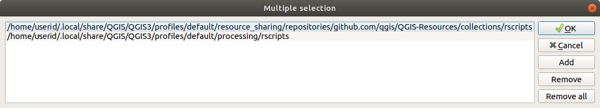

重要
翻訳は あなたが参加できる コミュニティの取り組みです。このページは現在 91.72% 翻訳されています。
27.11. 外部アプリケーションの設定
プロセシングフレームワークは、追加のアプリケーションを使って拡張できます。外部アプリケーションに依存するアルゴリズムは、独自のアルゴリズムプロバイダによって管理されます。追加のプロバイダは個別のプラグインとして見つけることができ、QGISプラグインマネージャを使ってインストールできます。
このセクションでは、これらの追加アプリケーションを含むようにプロセシングフレームワークを設定する方法を示し、それらに基づいたアルゴリズムのいくつかの特別な機能について説明します。一度システムを正しく設定すれば、他のアルゴリズムと同じように、ツールボックスやモデルデザイナーなど、どのコンポーネントからでも外部アルゴリズムを実行することができるようになります。
デフォルトでは、QGISに同梱されていない外部アプリケーションに依存するアルゴリズムは有効になっていません。システムにインストールされている場合は、プロセシング設定ダイアログで有効にすることができます。
27.11.1. Windowsユーザーへの注意点
あなたが上級ユーザーでなく、Windows上でQGISを実行している場合、この章の残りを読むことに興味がないかもしれません。スタンドアロンインストーラを使ってQGISをあなたのシステムにインストールしてください。これにより、SAGAとGRASSが自動的にインストールされ、QGISから実行できるように設定されます。これらのプロバイダから提供されるすべてのアルゴリズムは、それ以上の設定を必要とすることなく実行できるようになります。OSGeo4W アプリケーションを使ってインストールする場合は、SAGA と GRASS を選択してインストールするようにしてください。
27.11.2. ファイル形式に関する注意点
外部ソフトウェアを使用する場合、QGISでファイルを開いたからといって、そのファイルをその外部ソフトウェアで開いて処理できるわけではありません。ほとんどの場合、QGISで開いたファイルを他のソフトウェアで読み込むことができますが、そうでない場合もあります。ラスタレイヤ、ベクタレイヤを問わず、データベースや一般的でないファイル形式を使用する場合、問題が発生する可能性があります。そのような場合は、両方のプログラムが確実に理解できる、よく知られたファイル形式を使用するようにし、コンソール出力（ログパネル）をチェックして、何が間違っているのかを調べてください。
例えば、GRASSのラスタレイヤを入力として外部のアルゴリズムを呼び出すと、トラブルが発生し、作業が完了しない可能性があります。このため、そのようなレイヤはアルゴリズムに利用可能なレイヤとして表示されません。
しかしながら、ベクタレイヤについては問題が起きません。QGIS はベクタレイヤを外部アプリケーションに渡す前に、元のファイル形式から外部アプリケーションで受け入れられる形式に自動的に変換するためです。これには余分な処理時間が加わり、大きなレイヤで顕著でしょう。ですから、同じようなサイズのShapefile形式のデータセットからのレイヤよりも、DB接続からのレイヤの処理に時間がかかっても驚かないでください。
外部アプリケーションを使用していないプロバイダはQGISで開けるレイヤはどれも処理できます。なぜならそれらはQGISを通じて分析のためにそれを開いているので。
QGIS で生成されるすべてのラスタおよびベクタ出力形式は、入力レイヤとして使用できます。一部のプロバイダは特定の形式をサポートしていませんが、すべてのプロバイダは、後にQGISが自動的に変換できる一般的な形式にエクスポートできます。入力レイヤについては、変換が必要な場合、処理時間が長くなる可能性があります。
27.11.3. ベクタレイヤの選択に関する注意点
外部アプリケーションがQGIS内でベクタレイヤに存在する選択を知らされることもできます。しかし、それにはそれらが元から外部アプリケーションでサポートされていない形式であったかのように、すべての入力ベクタレイヤを書き換えることが必要です。選択が存在しないか、 選択された地物のみを使用 オプションがプロセシングの一般設定で有効になっていない場合にのみ、レイヤは外部アプリケーションに直接渡すことができます。
また、選択した地物だけをエクスポートする必要がある場合もあり、その場合は実行時間が長くなります。
27.11.4. Using third-party Providers
27.11.4.1. SAGA: System for Automated Geoscientific Analyses、地球科学自動分析システム
SAGAがQGISのインストールに含まれている場合、SAGAアルゴリズムをQGISから実行することができます。
Windowsを使っているなら、スタンドアロンインストーラーとOSGeo4Wインストーラーの両方にSAGAが含まれています。
SAGAグリッドシステムの制限について
複数の入力ラスターレイヤーを必要とするほとんどのSAGAアルゴリズムは、それらが同じグリッド系を持つことを必要としています。つまり、それらが同じ地理的領域をカバーして同じセルサイズを持ち、対応するグリッドが一致する必要があります。QGISからSAGAアルゴリズムを呼び出すときは、そのセルサイズと範囲に関係なく、どんなレイヤーも使用できます。複数のラスターレイヤーはSAGAアルゴリズムのための入力として使用される場合、QGISは（SAGAアルゴリズムが異なるグリッド系からのレイヤーで動作できない場合）共通のグリッド系にそれらをリサンプリングした後、SAGAに渡します。
その一般的なグリッド系の定義は、ユーザーによって制御され、そうする設定ウィンドウのSAGAグループ内のいくつかのパラメーターがあります。ターゲットグリッド系を設定する2つの方法があります。
手動で設定する。次のパラメーターの値を設定することによって範囲を定義します。
リサンプリング最小X
リサンプリング最大X
リサンプリング最小Y
リサンプリング最大Y
リサンプリングセルサイズ
QGISはその範囲に対して入力レイヤーを、それらがその範囲と重複していない場合でも、再サンプリングすることに注意してください。
入力レイヤーから自動的に設定する。このオプションを選択するには、 リサンプリングにグリッド系の最小カバーを使用 オプションチェックするだけです。他のすべての設定は無視され、すべての入力レイヤーを最小でカバーする範囲が使用されます。ターゲットレイヤーのセルサイズは、入力レイヤーの全てのセルサイズの最大値です。
多重ラスターレイヤーを使用しないあるいは固有の入力グリッドシステムを必要としないアルゴリズムでは、SAGAを呼び出す前にリサンプリングは実行されませんし、これらのパラメーターは使用されません。
マルチバンドレイヤーに関する制限
QGISとは異なり、SAGAではマルチバンドレイヤーをサポートしていません。（例えばRGBまたはマルチスペクトル画像のような）マルチバンドレイヤーを使用する場合は、最初にシングルバンド化された画像に分割する必要があります。そうするためには、「SAGA/グリッドツール/RGB画像を分割」アルゴリズム（RGB画像から三つの画像を作成する）や「SAGA /グリッドツール/バンド抽出」アルゴリズム（単一バンドを抽出する）を使用できます。
セルサイズの制限
SAGAではラスターレイヤーがx軸とy軸において同じセルサイズであることを仮定しています。もし、水平方向と垂直方向でセルサイズが異なる値のレイヤーで作業するならば、予期せぬ結果を得ることになるでしょう。この場合、入力レイヤーがSAGAによって適切に処理されないであろうという警告がプロセスログに加えられることになります。
ログを記録する
QGISはSAGAを呼び出すと、それはこれにより、すべての必要な操作を実行するためにコマンドのセットを通過する、そのコマンドラインインターフェイスを使用しません。SAGAは、追加のコンテンツと共に、既に行われる処理のパーセンテージを含むコンソールに情報を書き込むことにより、その進捗状況を示しています。この出力はフィルタがかけられ、アルゴリズムの実行中に、プログレスバーを更新するために使用されます。
QGISによって送信されたコマンドとSAGAによって出力された追加情報は、他のプロセシングログメッセージと一緒にログに記録することができ、QGISがSAGAアルゴリズムを実行するときに何が起こっているかを追跡するのに便利です。このロギングメカニズムを有効にするための2つの設定、すなわち コンソール出力をログに記録する と 実行コマンドをログに記録する があります。
外部アプリケーションを使用し、コマンドラインから呼び出す他のほとんどのプロバイダにも同様のオプションがあるため、プロセシング設定リストの他の場所にも同様のオプションがあります。
27.11.4.2. R scripts and libraries
プロセシングでRを有効にするには、Processing R Provider プラグインをインストールしてQGIS用にRを設定する必要があります。
設定は の プロセシング タブにある で行ないます。
オペレーティング・システムによっては、 R folder を使ってRバイナリの場所を指定する必要があるかもしれません。
注釈
Windows の場合、Rの実行ファイルは通常 C:¥Program Files¥R¥ の下のフォルダ(R- <version>)にあります。バイナリ ではなく フォルダを指定してください！
Linux では、RフォルダがPATH環境変数に入っていることを確認するだけです。ターミナル・ウィンドウで R が R を起動すれば、準備は完了です。
Processing R Provider プラグインをインストールすると、いくつかのサンプルスクリプトが プロセシングツールボックス に見つかります：
Scatterplot は与えられたベクタレイヤの2つの数値フィールドから散布図を作成するR関数を実行します。
test_sf は
sfパッケージに依存するいくつかの操作を行い、R パッケージsfがインストールされているかどうかをチェックするために使うことができます。パッケージがインストールされていない場合、Rはプロセシングオプションの で指定された Package repository を使って、パッケージ（および依存するすべてのパッケージ）のインストールを試みます。デフォルトはhttps://cran.r-project.org/ です。インストールには時間がかかるかもしれません…test_sp を使うと、Rパッケージ
spがインストールされているかどうかをチェックできます。このパッケージがインストールされていない場合、Rがインストールを試みます。

RがQGIS用に正しく設定されていれば、これらのスクリプトを実行できるはずです。
QGISコレクションからRスクリプトを追加する
QGISにおけるRの統合はSAGAとは異なり、あらかじめ定義された実行可能なアルゴリズムのセットはありません（Processing R Provider プラグインに付属するいくつかのスクリプト例を除く）。
サンプル R スクリプトのセットは QGIS Repository で利用可能です。以下の手順を実行し、QGIS Resource Sharing プラグインを使用してそれらを読み込んで有効にします。
QGIS Resource Sharing プラグインを追加します（プラグインマネージャの 設定 で 実験的プラグインも表示 を有効にする必要があるかもしれません）。
Open it ()
Settings タブを選びます
Reload repositories をクリックします
All タブを選びます
リストから QGIS R script collection を選び、Install ボタンをクリックします
これでそのコレクションが Installed タブにリストされているはずです
プラグインを閉じます
プロセシングツールボックス を開きます。問題がなければ、スクリプトの例がRの下に様々なグループで表示されます（下のスクリーンショットでは一部のグループのみが展開されています）。

図 27.36 いくつかのRスクリプトが表示された プロセシングツールボックス
一番上のスクリプトは、Processing R Provider プラグインのスクリプト例です。
もし何らかの理由でスクリプトが プロセシングツールボックス で利用できない場合は、次を試してみてください：
プロセシング設定を開く（ タブ）
に移動する
Ubuntuではそのパスを次に設定する（またはそのパスに含めた方が良い）：
/home/<user>/.local/share/QGIS/QGIS3/profiles/default/resource_sharing/repositories/github.com/qgis/QGIS-Resources/collections/rscripts

Windowsではそのパスを次に設定する（またはそのパスに含めた方が良い）：
C:\Users\<user>\AppData\Roaming\QGIS\QGIS3\profiles\default\resource_sharing\repositories\github.com\qgis\QGIS-Resources\collections\rscripts
編集するにはダブルクリックします。その後、パスを貼り付けたり入力したりするか、... ボタンでディレクトリに移動し、開いたダイアログで 追加 ボタンを押します。ここでは複数のディレクトリを指定することができます。それらはセミコロン(";")で区切られます。

QGIS 2 オンラインコレクションからすべての R スクリプトを取得したい場合は、QGIS R script collection の代わりに QGIS R script collection (from QGIS 2) を選択してください。おそらく、ベクタデータの入出力に依存するスクリプトは動作しないことがわかります。
Rスクリプトを作る
Rから行うのと同じように、スクリプトを書いたり、Rコマンドを呼び出したりすることができます。このセクションでは、QGISでRコマンドを使用するための構文と、その中でQGISオブジェクト（レイヤ、テーブル）を利用する方法について説明します。
R関数を呼び出すアルゴリズム（または、開発したより複雑なRスクリプトをQGISから利用できるようにしたい場合）を追加するには、Rコマンドを実行するスクリプトファイルを作成する必要があります。
Rスクリプトファイルの拡張子は .rsx で、R構文とRスクリプトの基本的な知識があれば、作成はとても簡単です。これらのファイルはRスクリプトフォルダに保存する必要があります。このフォルダ（R scripts folder）は、プロセシング設定ダイアログの R 設定グループで指定することができます）。
Rのメソッド spsample を呼び出して、指定したポリゴンレイヤのポリゴンの境界内にランダムなグリッドを作成する、非常にシンプルなスクリプトファイルを見てみましょう。このメソッドは maptools パッケージに属しています。QGISに組み込みたいアルゴリズムのほとんどが空間データを使用または生成するため、maptools や sp/sf のような空間パッケージの知識は非常に役に立ちます。
##Random points within layer extent=name
##Point pattern analysis=group
##Vector_layer=vector
##Number_of_points=number 10
##Output=output vector
library(sp)
spatpoly = as(Vector_layer, "Spatial")
pts=spsample(spatpoly,Number_of_points,type="random")
spdf=SpatialPointsDataFrame(pts, as.data.frame(pts))
Output=st_as_sf(spdf)
Pythonの二重のコメント記号（##）で始まる最初の行は、スクリプトの表示名とグループを定義し、QGISに入力と出力を伝えます。
注釈
自分でRスクリプトを書く方法を詳しく知るには、トレーニングマニュアルの R Intro セクションを参照し、 QGIS R Syntax セクションを参照してください。
入力パラメータを宣言すると、QGISはその情報を2つのことに使用します：そのパラメータの値をユーザに尋ねるユーザインタフェースを作成することと、R関数の入力として使用できる対応したR変数を作成することです。
上記の例では、Vector_layer という vector 型の入力を宣言しました。そのアルゴリズムを実行するとき、QGIS はユーザが選択したレイヤを開き、それを Vector_layer という変数に格納します。つまり、パラメータ名はそのパラメータの値にアクセスするために使用するRの変数名となります（そのため、Rの予約語をパラメータ名として使用することは避けるべきです）。
ベクタレイヤやラスタレイヤなどの空間パラメータは st_read() (または readOGR) や brick() (または readGDAL) コマンドを使って読み込まれ（これらのコマンドを記述ファイルに追加する必要はありません -- QGIS が行います）、sf (または Spatial*DataFrame) オブジェクトとして保存されます。
テーブルフィールドは、選択されたフィールド名を格納する文字列として保存されます。
ベクタファイルは、##load_vector_using_rgdal を指定すると、 st_read() の代わりに readOGR() コマンドを使って読み込むことができます。これは sf オブジェクトの代わりに Spatial*DataFrame オブジェクトを生成します。
ラスタファイルは、##load_raster_using_rgdal を指定すると、brick() の代わりに readGDAL() コマンドを使って読み込むことができます。
もしあなたが上級ユーザーで、QGISにレイヤのオブジェクトを作成させたくない場合、 ##pass_filenames を使用することで、ファイル名を文字列で指定することができます。この場合、そのファイルに含まれるデータに対して操作を行う前に、ファイルを開く必要があります。
以上の情報で、Rスクリプトの最初の行（Pythonのコメント文字で始まっていない最初の行）を理解することができます。
library(sp)
spatpoly = as(Vector_layer, "Spatial")
pts=spsample(polyg,numpoints,type="random")
spsample 関数は sp ライブラリで提供されているので、最初にすることはそのライブラリを読み込むことです。変数 Vector_layer には sf オブジェクトが格納されています。ここでは sp ライブラリの関数（spsample）を使用するので、as 関数を使用して sf オブジェクトを SpatialPolygonsDataFrame オブジェクトに変換する必要があります。
次に、このオブジェクトと numpoints 入力パラメータ（生成するポイントの数を指定します）を使用して spsample 関数を呼び出します。
Output という名前のベクタ出力を宣言したので、sf オブジェクトを含む Output という名前の変数を作成しなければなりません。
これを 2 つのステップで行います。まず、SpatialPointsDataFrame 関数を使用して、関数の結果から SpatialPolygonsDataFrame オブジェクトを作成し、次に、(sf ライブラリの) st_as_sf 関数を使用して、そのオブジェクトを sf オブジェクトに変換します。
中間変数には好きな名前を使うことができます。ただ、最終的な結果を格納する変数が定義された名前（この場合は Output）を持ち、適切な値（ベクタレイヤの出力には sf オブジェクト）を含んでいることを確認してください。
この場合、spsample メソッドから得られた結果は、SpatialPointsDataFrame オブジェクトを介して、明示的に sf オブジェクトに変換する必要がありました。なぜなら、それ自体がpppクラスのオブジェクトであり、QGISに返すことができないからです。
アルゴリズムは、ラスタレイヤを生成した場合、それらが保存されている方法は、 ##dontuserasterpackage オプションを使用しているかどうかに依存します。それを使用している場合は、これらのレイヤは、 writeGDAL() メソッドを使用して保存されます。そうでない場合、 raster パッケージから writeRaster() メソッドが使用されます。
##pass_filenames オプションを使用した場合、出力は raster パッケージを使用して生成されます（ writeRaster() を使用）。
アルゴリズムがレイヤを生成せず、代わりにコンソールにテキスト結果を表示する場合、実行が終了したらコンソールに表示させたいことを示す必要があります。そのためには、表示させたい結果を生成するコマンド行を > （「大なり」）記号で始めるだけです。行頭に > が付いた行の出力のみが表示されます。例えば、ベクタレイヤの属性の指定されたフィールド（カラム）に対して正規性テストを実行するアルゴリズムの記述ファイルを以下に示します：
##layer=vector
##field=field layer
##nortest=group
library(nortest)
>lillie.test(layer[[field]])
最後の行の出力が印刷されているが、第一の出力はない（そしていずれも、他のコマンドラインからの出力は、QGISによって自動的に追加されています）。
もしあなたのアルゴリズムが（plot()``メソッドを使って）何らかのグラフィックを作成するのであれば、以下の行を追加してください（``output_plots_to_html は以前は showplots でした）：
##output_plots_to_html
これは、QGISはRの実行が完了した後に開かれる一時ファイルにすべてのRのグラフィック出力をリダイレクトするようになります。
グラフィックスとコンソールの両方の結果は、プロセシング結果マネージャから入手できます。
For more information, please check the R scripts in the official QGIS collection (you download and install them using the QGIS Resource Sharing plugin, as explained in QGISコレクションからRスクリプトを追加する). Most of them are rather simple and will greatly help you understand how to create your own scripts.
注釈
sf、rgdal、raster ライブラリはデフォルトで読み込まれるので、対応する library() コマンドを追加する必要はありません。しかし、その他の必要なライブラリは明示的に読み込む必要があります： library(ggplot2)`` （ggplot2 ライブラリを読み込む）。もしそのパッケージがあなたのマシンにまだインストールされていない場合、プロセシングはそのパッケージをダウンロードしてインストールしようとします。こうすることで、R Standaloneでもパッケージを利用できるようになります。パッケージのダウンロードが必要な場合、スクリプトの初回実行に時間がかかる可能性があることに 注意してください。
sf_testの実行時にインストールされるRライブラリ
Rスクリプト sp_test は、Rパッケージ sp と raster を読み込もうとします。
Rスクリプト sf_test は、sf と raster を読み込もうとします。これら二つのパッケージがインストールされていないとき、Rはそれら（とそれが依存する全てのライブラリ）を読み込んでインストールしようとするでしょう。
以下のRライブラリは、UbuntuのProcessing Toolboxから Processing R Provider プラグインのバージョン2.0と R 3.4.4（apt パッケージの r-base-core のみ）を新規インストールして sf_test を実行した後、~/.local/share/QGIS/QGIS3/profiles/default/processing/rscripts` に格納されます：
abind, askpass, assertthat, backports, base64enc, BH, bit, bit64, blob, brew, callr, classInt, cli, colorspace, covr, crayon, crosstalk, curl, DBI, deldir,
desc, dichromat, digest, dplyr, e1071, ellipsis, evaluate, fansi, farver, fastmap, gdtools, ggplot2, glue, goftest, gridExtra, gtable, highr, hms,
htmltools, htmlwidgets, httpuv, httr, jsonlite, knitr, labeling, later, lazyeval, leafem, leaflet, leaflet.providers, leafpop, leafsync, lifecycle, lwgeom,
magrittr, maps, mapview, markdown, memoise, microbenchmark, mime, munsell, odbc, openssl, pillar, pkgbuild, pkgconfig, pkgload, plogr, plyr, png, polyclip,
praise, prettyunits, processx, promises, ps, purrr, R6, raster, RColorBrewer, Rcpp, reshape2, rex, rgeos, rlang, rmarkdown, RPostgres, RPostgreSQL,
rprojroot, RSQLite, rstudioapi, satellite, scales, sf, shiny, sourcetools, sp, spatstat, spatstat.data, spatstat.utils, stars, stringi, stringr, svglite,
sys, systemfonts, tensor, testthat, tibble, tidyselect, tinytex, units, utf8, uuid, vctrs, viridis, viridisLite, webshot, withr, xfun, XML, xtable
27.11.4.3. GRASS
GRASSを設定するのはSAGAを設定するのとあまり変わりません。Windowsをお使いの場合は、まずGRASSフォルダのパスを定義する必要があります。
デフォルトでは、プロセシングフレームワークは、QGISに同梱されているGRASSディストリビューションを使用するようにGRASSコネクタを設定しようとします。ほとんどのシステムでは問題なく動作するはずですが、問題が発生した場合は、GRASSコネクタを手動で設定する必要があるかもしれません。また、別のGRASSを使用したい場合は、別のバージョンがインストールされているフォルダを指すように設定を変更することができます。アルゴリズムを正しく動作させるにはGRASS 7が必要です。
Linuxをお使いの場合は、GRASSが正しくインストールされ、ターミナルウィンドウから問題なく実行できることを確認してください。
GRASSアルゴリズムは、計算するための領域を使用します。この領域は、アルゴリズムを毎回実行するために使用されるすべての入力レイヤーを覆う最小範囲をとる、自動的SAGA構成に見られるものと同様の値を用いて、または手動で定義できます。後者のアプローチが好む動作である場合、GRASSの設定パラメーターで 最小カバー領域を使用 オプションをチェックするだけです。
27.11.4.4. LAStools
QGISで LAStools を使うには、LAStoolsをコンピュータにダウンロードしてインストールし、LAStoolsプラグイン（公式リポジトリから入手可能です）をQGISにインストールする必要があります。
Linuxプラットフォームでは、いくつかのツールを実行するために Wine が必要です。
LAStoolsはProcessing options (, プロセシング タブ, )で有効化され、設定されます。ここでLAStools (LAStoolsフォルダ)とWine (Wineフォルダ)の場所を指定できます。Ubuntuの場合、デフォルトのWineフォルダは /usr/bin です。
27.11.4.5. OTBアプリケーション
OTBアプリケーションはQGISプロセシングフレームワークで完全にサポートされています。
OTB (Orfeo ToolBox) is an image processing library for remote sensing data. It also provides applications that provide image processing functionalities. The list of applications and their documentation are available in OTB CookBook
注釈
OTBはQGISと一緒に配布されていないので、別途インストールする必要があることに注意してください。OTBのバイナリパッケージは download page にあります。
OTBライブラリを見つけるようにQGISプロセシングを設定するには：
Open the processing settings:
You can see
OTBunder menu:Expand the OTB entry
OTBフォルダ を設定します。これはOTBがインストールされている場所です。
OTBアプリケーションフォルダ を設定します。これはOTBアプリケーションの場所です（
<PATH_TO_OTB_INSTALLATION>/lib/otb/applications）Click OK to save the settings and close the dialog.
設定が正しければ プロセシングツールボックス でOTBアルゴリズムが利用可能になります。
QGISプロセシングで利用できるOTB設定のドキュメント
OTBフォルダ: これはOTBが利用可能なディレクトリです。
OTBアプリケーションフォルダ：これはOTBアプリケーションの場所です。
複数のパスが許されます。
ログのレベル （オプション）：OTBアプリケーションが使うロガーのレベル。
ログのレベルはアルゴリズム実行中に表示される詳細の量を制御します。指定できるログのレベルの値は
INFO、WARNING、CRITICAL、DEBUGです。この値はデフォルトではINFOです。これは上級者向けの設定です。使用するRAMの最大値 （オプション）：OTBアプリケーションはデフォルトで利用可能なすべてのシステムRAMを使います。
しかし、このオプションを使って、特定の量のRAM（MB単位）を使うようにOTBに指示することができます。256の値はOTBプロセシングプロバイダによって無視されます。これは上級者向けの設定です。
**ジオイドファイル**（オプション）：ジオイドファイルのパス。
このオプションは、OTBアプリケーションのパラメータelev.dem.geoidとelev.geoidの値を設定します。この値をグローバルに設定することで、複数の処理アルゴリズムで値を共有することができます。デフォルトでは空。
**SRTMタイルフォルダ**（オプション）：SRTMタイルが利用できるディレクトリ。
SRTM データをローカルに保存し、処理中にファイルをダウンロードすることを避けることができます。このオプションは、OTBアプリケーションのelev.dem.pathとelev.demパラメータの値を設定します。この値をグローバルに設定することで、複数の処理アルゴリズムで値を共有することができます。デフォルトでは空。
Compatibility and Troubleshoot
Starting from OTB 6.6.1, new releases of OTB are made compatible with at least the latest QGIS version available at that time.
QGISプロセシングのOTBアプリケーションに問題がある場合は、OTB bug tracker に qgis ラベルを付けてissueを登録してください。
Additional information about OTB and QGIS can be found in OTB Cookbook.